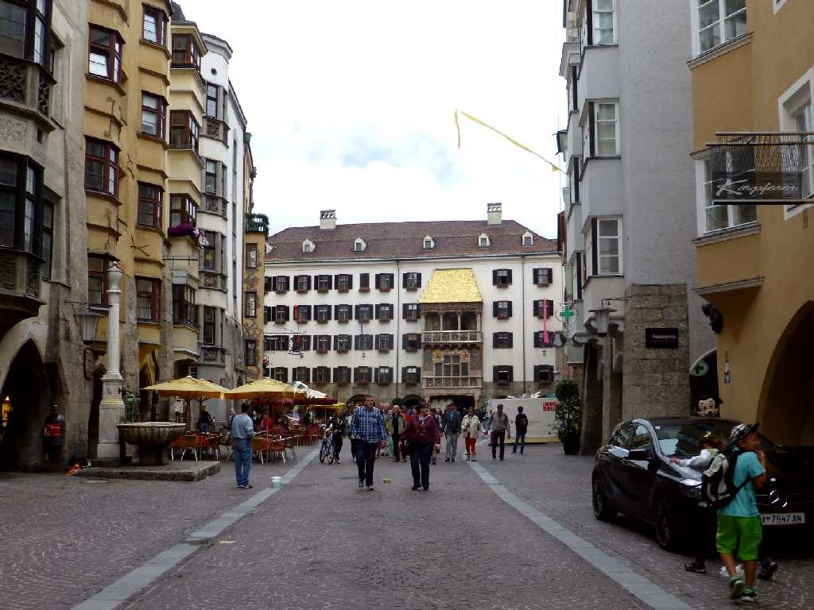
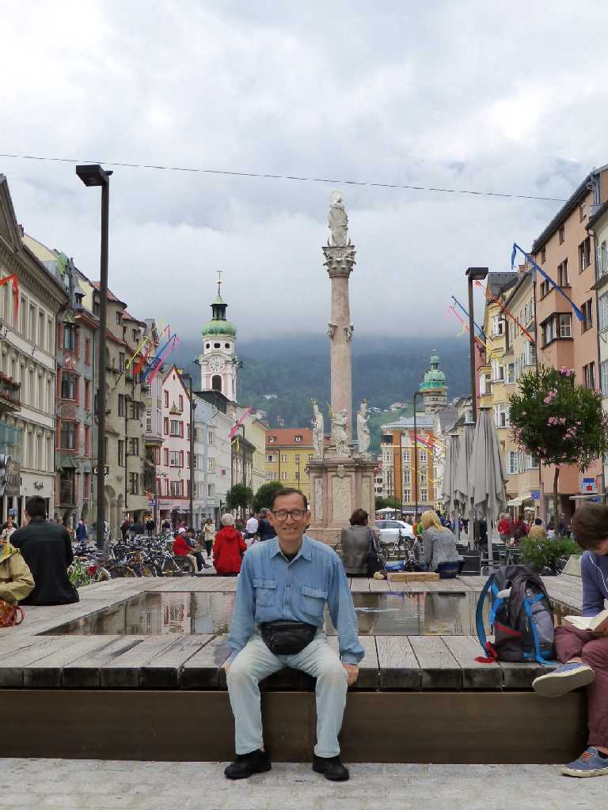
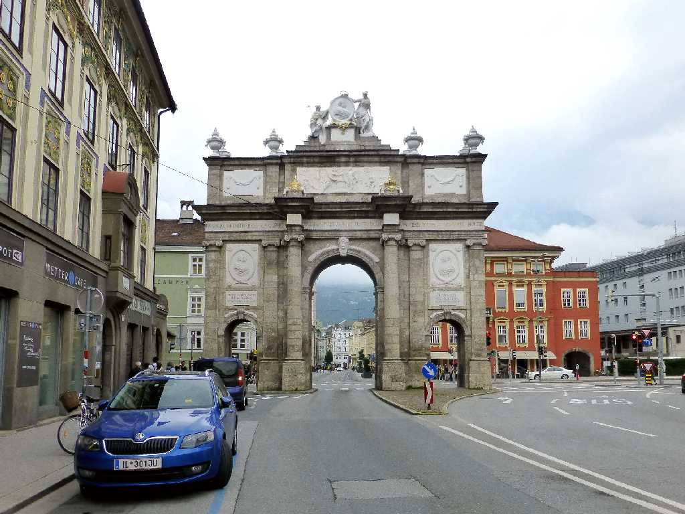
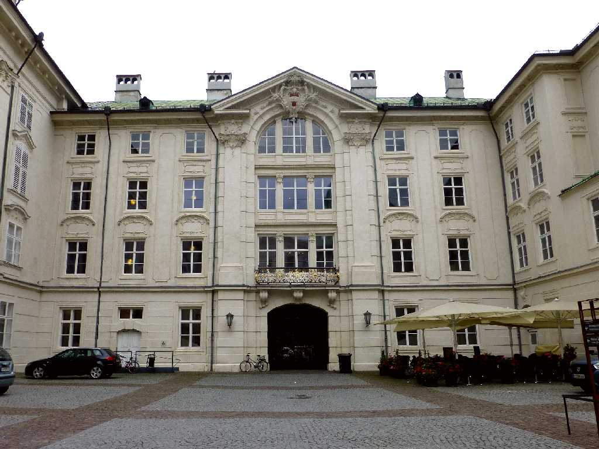
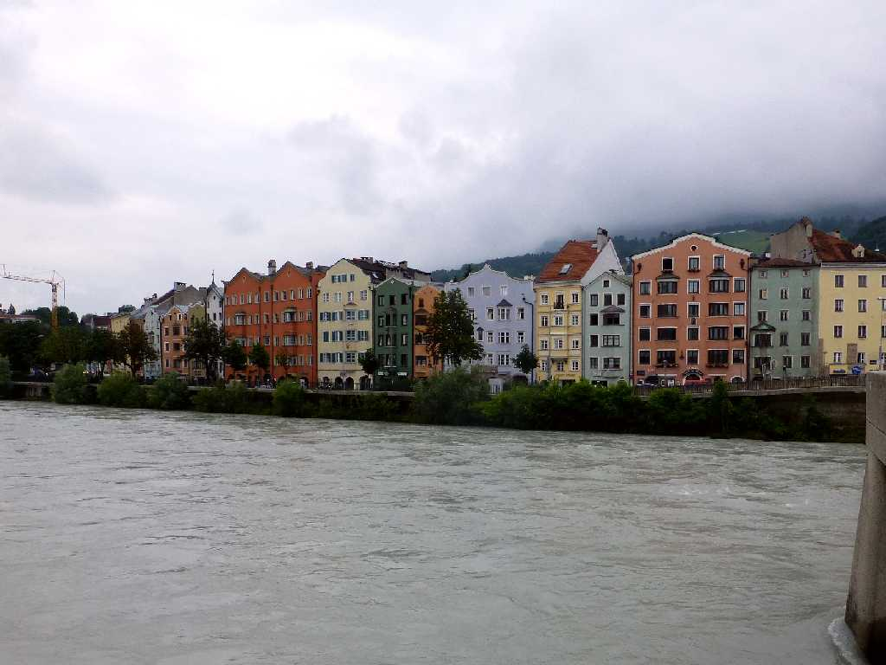
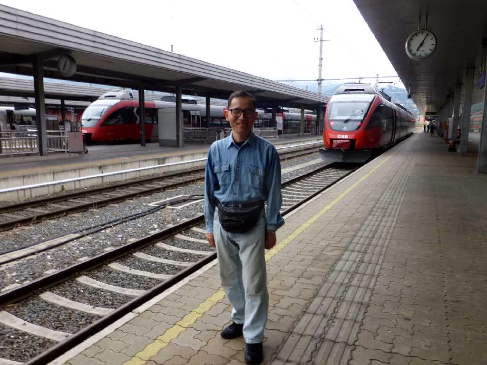

Goldenes Dachl Innsbruck
インスブルック旧市街を代表する黄金の小屋根はマクシミリアン一世がチロル公国を継承後１４９６年にこのバルコニーを完成させ街並みや祭りを見物した

June 17 2015 Annasäule Maria Theresien Straße Innsbruck

Triumphpforte Innsbruck

Kaiserliche Hofburg Innsbruck
Sankt Jakob Kathedrale Innsbruck

Innbrücke Inn Fluß

June 17 2015 Bahnhof Innsbruck